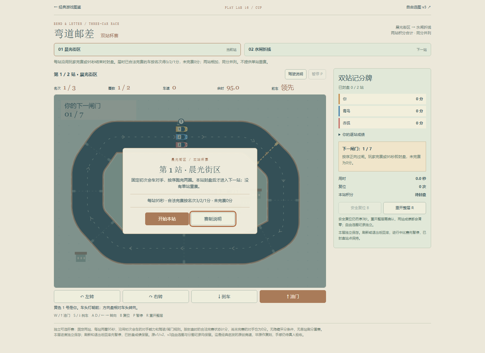
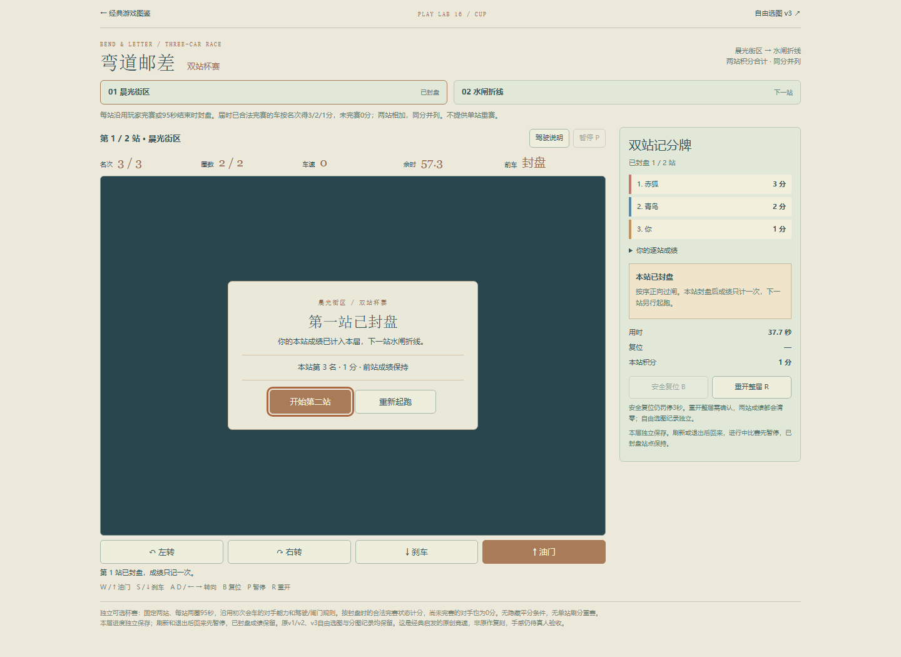
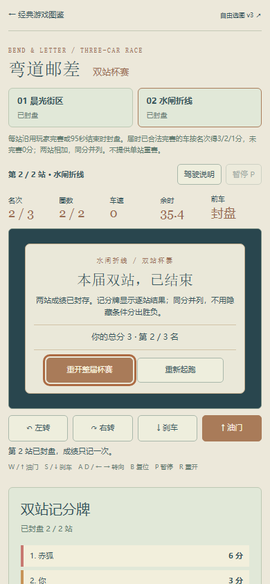
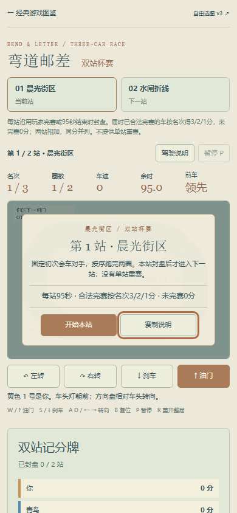
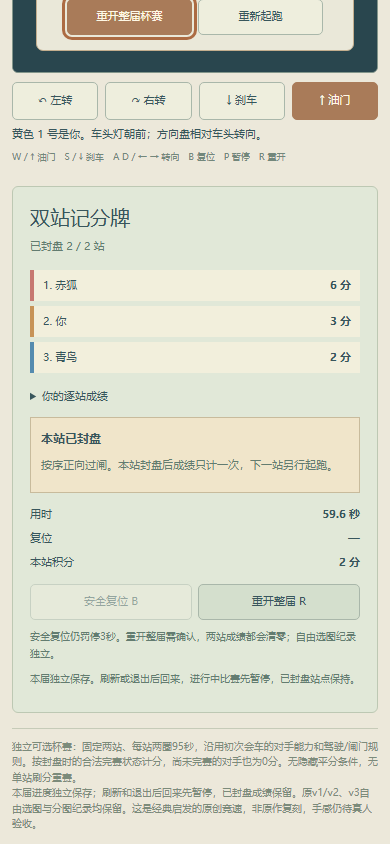

独立可选杯赛，先晨光街区、后水闸折线，各一场固定初次会车对手。原自由选图和分图纪录保留，40项目录不变。每站沿用玩家完赛或95秒时封盘；届时已合法完赛的车按名次得3/2/1分，未完赛（包括未过线对手）得0分。两站相加，同分并列，无隐藏破平条件。
站间明确显示已计分结果，再进入下一站。没有单站重赛，重复结算不加分；确认重开整届会一起清空两站。进行中刷新/退出后接续先暂停，站间及最终结果保持。独立存档，不写原自由赛纪录。
| 普通UI本轮各一次 | 合法完赛 | 名次与积分 |
|---|---|---|
| 晨光街区 | 16闸 · 37.69秒 | 第3名 · 1分 |
| 水闸折线 | 24闸 · 59.57秒 | 第2名 · 2分 |
| 本届总成绩 | 两站均封盘 | 3分 · 总排名第2 |
Chromium147普通WASD输入，用只读车辆/几何数据和已公开数字转向策略约50ms决策；未注入位置、时间、胜负或完成存档。首站结算后修复新子路径的大厅返回识别，从同一真实档接续第二站，未重跑首站。第二站活动刷新精确保留三车和首站结果；站间退出再进、终态刷新不重复计分、取消重开、确认重开两站清零均通过。
390CSS原生触控模拟验证油门与转向、部分释放、移出、取消及暂停恢复；不是物理手机。杯赛期间旧自由赛键保持原字节，之后正常打开自由赛仍恢复原暂停比赛。模型另验自然超时0分仍可继续、同分并列、重复封盘/下一站防护、存储故障；这些不是普通UI胜利或真机证据。
首次预览缺少本地稀疏工作区中的既有封面SVG，补回当前Git文件，未改公共素材。一次触控日志断言混入正常鼠标按钮事件，之后仅续验触控与返回。实际完赛截图中的共用次按钮旧文字已于发布前改为“赛制说明”，末站附注也已区分终局；按钮一直只打开说明，不重赛。附最终按钮短验截图，未为此重跑两站。
核心UI证据 · 六组模型与fixture · 子路径与旧入口兼容 · 可重跑模型检查。真人操控乐趣、难度和物理设备表现未验收；本轮完成流程并非夺冠。




